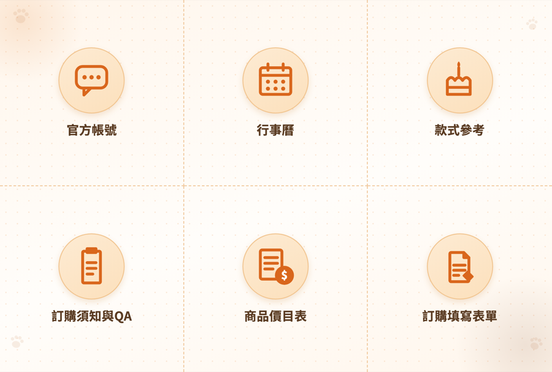
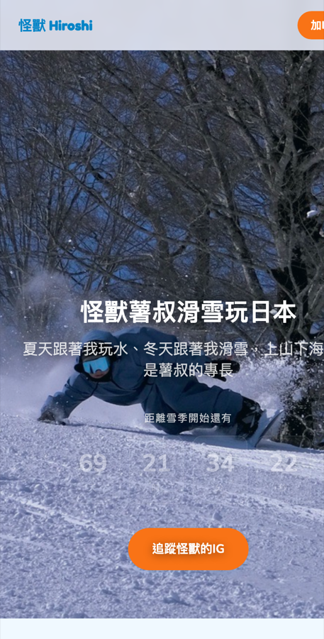
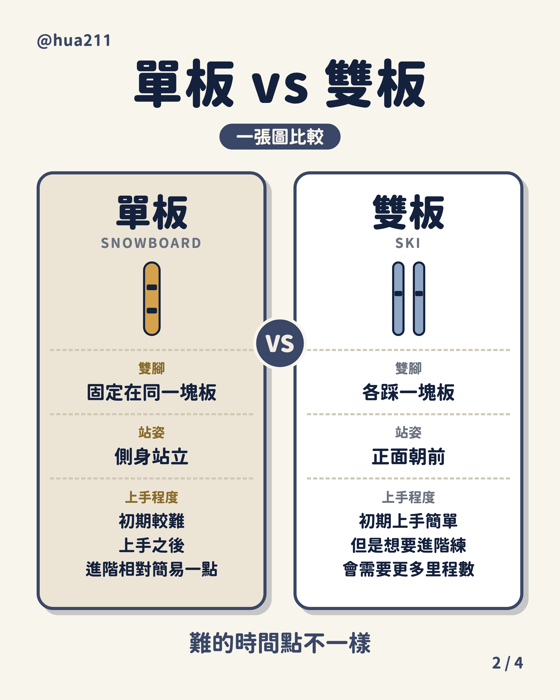

自我介紹與作品集
蔡佩樺（Jade），1992 年生。冬天在日本當滑雪教練，夏天做自己的事：經營澎湖寵物零食品牌「派對尾巴」、寫計畫案，也用 AI 做網站與影片。
生活裡喜歡滑雪、瑜伽、料理與旅行。
我以前沒有做過類似的職位，所以老實說，一開始很沒有信心，覺得自己可能不夠格。
剛畢業的時候，我有比較大的經濟壓力，所以選了相對容易入門的工作，在海外做線上遊戲客服，這一做就是很多年。
客服的工作很忙，電話要接，文字客人也要回，常常同時照顧好幾位客人，還要聯絡各部門把問題解決。
那幾年我也常想，自己想做其他的事，但一直沒有找到適合轉換的方向，所以就繼續做下去。
後來因為接觸了滑雪，我愛上了滑雪，決定辭掉客服，成為滑雪教練。
冬天在日本教學，夏天沒有雪季，我就想辦法讓自己不要停下來，其中一件事是寫計畫案，寫過青年回鄉、澎湖在地發展的小型計畫，都有拿到經費補助。
今年開始接觸 AI，我發現，以前一直放在心裡的那些想法，好像真的可以動手做出來了。其實我一直對數位相關的工作有興趣，只是以前不知道怎麼開始。現在我用 AI 剪教學影片、做網站，也在慢慢摸索怎麼把腦中的點子變成真的東西。
所以這次看到這個徵人啟事，雖然沒有做過類似的職位，我還是想試試看。
今年冬天我已經答應了許多學生回日本教學，所以到明年 3 月底前，我都會在日本工作。
雖然時間上不方便，但看到這個徵人啟事，我還是想試試看。如果有可以先從兼職開始的方式，我也很願意。



如果有可以先從兼職開始的方式，我也很願意。
natobaten@gmail.com